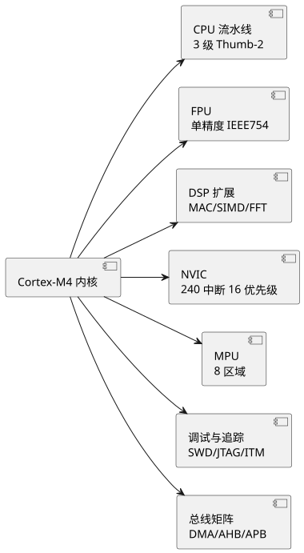
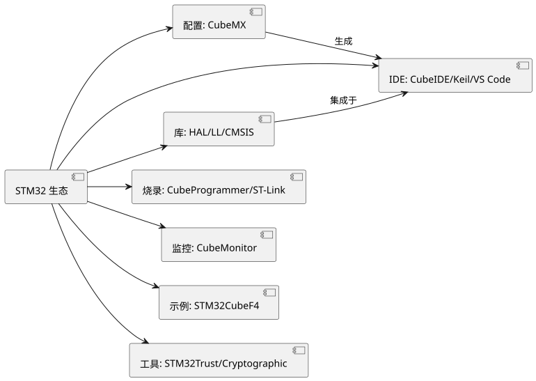

第 13 章 STM32 与 Cortex-M4 概述
学习目标
- 了解 STM32 系列家族（F0/F1/F4/F7/H7/L/G）的定位与差异
- 掌握 Cortex-M4 内核的关键特性（DSP、FPU、NVIC、Thumb-2）
- 熟悉 STM32 的主要参数与封装引脚分布
- 理解寄存器、SPL、HAL、LL 四种开发方式的差异与选型
- 了解 STM32 生态系统（CubeMX/CubeIDE/CubeProgrammer/HAL 库）的组成
13.1 STM32 系列家族
STM32 是意法半导体（STMicroelectronics，简称 ST）基于 ARM Cortex-M 内核推出的 32 位微控制器系列，自 2007 年第一款 STM32F103 上市以来，已经发展成为全球应用最广泛的 32 位单片机家族之一。STM32 命名规则中，首字母代表系列定位：
- F（Mainstream）：主流型，覆盖入门到中端，包括 F0/F1/F3 等
- H（High-performance）：高性能型，包括 F2/F4/F7/H7 等
- L（Low-power）：超低功耗型，包括 L0/L1/L4/L5/U5 等
- W（Wireless）：无线型，包括 WB/WL 等，集成 BLE/Sub-1G RF
- G（Mainstream + 较新工艺）：新型主流型，包括 G0/G4 等
下表对比 STM32 各主力系列的定位与典型参数，便于选型参考：
| 系列 | 内核 | 主频 | Flash/RAM | 典型特色 | 定位 |
|---|---|---|---|---|---|
| STM32F0 | Cortex-M0 | 48 MHz | 16-256 KB / 4-32 KB | 入门 32 位、超低价 | 替代 8 位 |
| STM32F1 | Cortex-M3 | 72 MHz | 16-1 MB / 6-96 KB | 经典主流、生态成熟 | 教学/通用 |
| STM32F4 | Cortex-M4F | 168-180 MHz | 512 KB-2 MB / 192-384 KB | DSP+FPU、USB OTG、ETH | 高性能通用 |
| STM32F7 | Cortex-M7 | 216 MHz | 1-2 MB / 320-512 KB | L1 缓存、更优 DSP | 高端通用 |
| STM32H7 | Cortex-M7（+M4） | 400-550 MHz | 1-2 MB / 1-4 MB | 双核、最高性能 | 高端工业 |
| STM32L4 | Cortex-M4F | 80-120 MHz | 128-1 MB / 64-320 KB | 超低功耗 | 电池供电 |
| STM32G4 | Cortex-M4F | 170 MHz | 128-512 KB / 32-128 KB | 高精度模拟、HRTIM | 电机控制/数字电源 |
本课程第 3 篇选用 STM32F407VET6 作为进阶教学平台。该型号在性能、外设丰富度、价格、生态支持四者之间取得良好平衡，是高校教学与工业产品中应用最广的 STM32 型号之一，与正点原子、野火、ST 官方 Nucleo 等开发板生态高度匹配。
13.2 Cortex-M4 内核特性
STM32F407 采用 ARM Cortex-M4F 内核（带浮点单元的 Cortex-M4），相比传统 8051 内核有质的飞跃。其关键特性包括：
- 32 位 RISC 架构：基于 ARMv7-M 架构，使用 Thumb-2 指令集（16/32 位混合编码），兼顾代码密度与性能。
- 168 MHz 主频：单周期乘法、硬件除法，1.25 DMIPS/MHz，理论性能约 210 DMIPS。
- FPU（Floating-Point Unit）：符合 IEEE 754 单精度浮点标准，硬件执行 float 运算，避免软件浮点库的开销。
- DSP 指令扩展：支持单周期 MAC（乘加）、SIMD（单指令多数据）、FFT 加速指令，适合数字信号处理。
- NVIC（Nested Vectored Interrupt Controller）：嵌套向量中断控制器，支持 240 个中断、256 个优先级（STM32F4 实际使用 16 级）、尾链（tail-chaining）与晚到（late-arrival）优化，中断响应延迟仅 12 个周期。
- 流水线：3 级流水线（取指/译码/执行），分支预测减少跳转开销。
- 存储器保护单元 MPU：8 个区域，支持特权/用户模式隔离，用于 RTOS 任务保护。
- 调试追踪：支持 SWD/JTAG 调试、ITM/DWT 软件追踪、ETM 指令追踪。

查看 PlantUML 源码
@startuml
skinparam defaultFontName "Microsoft YaHei"
skinparam backgroundColor #ffffff
left to right direction
component "Cortex-M4 内核" as A
component "CPU 流水线\n3 级 Thumb-2" as B
component "FPU\n单精度 IEEE754" as C
component "DSP 扩展\nMAC/SIMD/FFT" as D
component "NVIC\n240 中断 16 优先级" as E
component "MPU\n8 区域" as F
component "调试与追踪\nSWD/JTAG/ITM" as G
component "总线矩阵\nDMA/AHB/APB" as H
A --> B
A --> C
A --> D
A --> E
A --> F
A --> G
A --> H
@endumlCortex-M4 的 NVIC 是相比 8051 中断系统最显著的优势。8051 仅有 5 个中断源、2 级优先级，且需手动管理中断嵌套；而 NVIC 由硬件自动完成优先级比较、栈保存/恢复、嵌套仲裁，开发者只需配置优先级分组即可实现复杂中断嵌套。中断向量表（Vector Table）位于地址 0x00000004 起始处，每个向量占 4 字节，硬件自动跳转到对应 ISR（中断服务函数）。
13.3 STM32F407VET6 主要参数与引脚
STM32F407VET6 是 STM32F407 系列中常用的中容量型号，命名含义分解如下：
| 字段 | 含义 |
|---|---|
| STM32 | ST 公司 32 位 Cortex-M MCU |
| F407 | 高性能系列 F4，型号 407 |
| V | 封装为 LQFP100（100 引脚） |
| E | Flash 容量 512 KB（E=512K，G=1M，I=2M） |
| T | 封装类型为 LQFP |
| 6 | 工作温度 -40 ~ +85 ℃（工业级） |
STM32F407VET6 的主要参数如下：
| 参数项 | 规格 |
|---|---|
| 内核 | ARM Cortex-M4F @ 168 MHz |
| Flash | 512 KB |
| SRAM | 192 KB（112 KB 通用 + 64 KB CCM + 16 KB 备份域） |
| 引脚数 | LQFP100，可用 I/O 82 个 |
| 定时器 | 17 个（高级 2 + 通用 12 + 基本 2 + 看门狗） |
| 通信接口 | 3×USART + 2×UART + 3×SPI + 3×I2C + 2×CAN + 1×USB OTG FS + 1×USB OTG HS + 1×ETH + 1×SDIO |
| ADC | 3 个 12 位 ADC，最高 2.4 MSPS，24 通道 |
| DAC | 2 个 12 位 DAC |
| GPIO 最大翻转速率 | 84 MHz |
| 供电 | VDD 1.8-3.6 V，I/O 容忍 5 V |
| 封装 | LQFP100 14×14 mm，0.5 mm 间距 |
LQFP100 封装的引脚分布包含若干关键引脚：复位 NRST（引脚 14）、晶振 HSE OSC_IN/OSC_OUT（引脚 12/13，常用 8 MHz）、LSE 32.768 kHz 用于 RTC（引脚 8/9）、BOOT0（引脚 94）/BOOT1（PB2）决定启动模式、VBAT 备用电池（引脚 6）、VDD/VSS 多对引脚供电。PA、PB、PC、PD、PE 五组 GPIO 端口，每个端口 16 个引脚（LQFP100 中 PD 与 PE 仅部分引出）。
13.4 STM32 开发方式对比
STM32 的开发方式经历了从底层到上层的演进，目前主流存在四种方式，开发者可根据需要选择：
| 方式 | 抽象层级 | 代码量 | 可读性 | 执行效率 | 可移植性 | 典型场景 |
|---|---|---|---|---|---|---|
| 寄存器（Register） | 最底层 | 大 | 差 | 最高 | 差 | 追求极致性能、对寄存器学习 |
| SPL（标准外设库） | 中等 | 中 | 较好 | 高 | 中 | 老项目维护，已不再更新 |
| HAL（硬件抽象层） | 高 | 小 | 好 | 中 | 高 | ST 主推，CubeMX 配套 |
| LL（底层库） | 中低 | 中 | 较好 | 高 | 高 | 对性能有要求的场合 |
下面对比寄存器与 HAL 两种极端风格的 LED 翻转代码，直观感受差异：
/* 寄存器方式：直接操作 GPIOA 第 5 位（PA5），需查寄存器地址 */
#define GPIOA_ODR (*(volatile uint32_t *)(0x40020000 + 0x14))
GPIOA_ODR ^= (1 << 5); /* 异或翻转 PA5 输出 */
/* HAL 库方式：调用 HAL_GPIO_TogglePin，含义直观 */
HAL_GPIO_TogglePin(GPIOA, GPIO_PIN_5);
本课程统一采用 HAL 库 + CubeMX 方式，理由如下：① ST 官方主推，长期维护有保障；② CubeMX 图形化配置生成初始化代码，大幅减少查阅寄存器的负担；③ HAL 屏蔽寄存器细节，代码可读性与可移植性最佳，适合应用型人才培养；④ HAL 在性能要求高的场合可辅以 LL 库或寄存器内联优化，灵活性够用。SPL 已被 ST 标记为不再更新（legacy），不推荐新项目使用。
13.5 STM32 生态系统
STM32 之所以能在 32 位单片机市场长期领先，硬件性能只是基础，完善的生态工具链才是核心竞争力。ST 官方提供的生态由以下几部分构成：
- STM32CubeMX：图形化配置工具，支持芯片选型、引脚分配、时钟树配置、外设配置、中间件（FreeRTOS/FatFS/USB/USB-Device 等）一键勾选，自动生成 C 代码与工程文件（CubeIDE/Keil/IAR/Makefile 等）。
- STM32CubeIDE：基于 Eclipse 的官方集成开发环境，集成代码编辑、编译、下载、调试、CubeMX、STM32CubeMonitor 等工具，免费且跨平台。
- STM32CubeProgrammer：官方烧录工具，支持 ST-Link/J-Link/CubeProgrammer 等调试器，提供 GUI 与命令行两种模式，支持 SWD/JTAG/USART/USB/OTA 等多种烧录方式。
- HAL 库与 LL 库：HAL（Hardware Abstraction Layer）面向应用层，封装完善、可移植性高；LL（Low-Layer）面向寄存器薄封装，性能接近寄存器。两者可共存于同一工程。
- Cube 库（STM32CubeF4）：包含 HAL/LL/CMSIS 驱动、中间件、BSP 板级支持、示例工程，是所有开发的基础。
- STM32CubeMonitor：运行时变量监控工具，类似"PC 端示波器"，无需暂停程序即可实时采集与可视化变量。
- ST-Link/V2/V3：官方调试器，支持 SWD 调试与下载、SWV 追踪、虚拟串口。Nucleo 板载 ST-Link，开发极方便。

查看 PlantUML 源码
@startuml
skinparam defaultFontName "Microsoft YaHei"
skinparam backgroundColor #ffffff
left to right direction
component "STM32 生态" as A
component "配置: CubeMX" as B
component "IDE: CubeIDE/Keil/VS Code" as C
component "库: HAL/LL/CMSIS" as D
component "烧录: CubeProgrammer/ST-Link" as E
component "监控: CubeMonitor" as F
component "示例: STM32CubeF4" as G
component "工具: STM32Trust/Cryptographic" as H
A --> B
A --> C
A --> D
A --> E
A --> F
A --> G
A --> H
B --> C : 生成
D --> C : 集成于
@enduml此外，社区生态同样丰富：开源工具 PlatformIO/VS Code 集成、Arduino_Core_STM32 让 STM32 也能用 Arduino API 开发；ARM 官方的 CMSIS-DSP 提供 FFT/FIR/IIR 等常用算法库；嵌入式 OS 如 FreeRTOS、RT-Thread、Zephyr 均有官方 STM32BSP 支持。AI 辅助开发方面，TRAE、GitHub Copilot、ChatGPT 在 HAL 函数查询、CubeMX 配置建议、报错分析等场景中能显著提升开发效率，将在后续章节结合实例介绍。
本章小结
- STM32 是 ST 基于 Cortex-M 内核的 32 位 MCU 家族，分主流型（F/G）、高性能型（F2/F4/F7/H7）、低功耗型（L）、无线型（W/B）等定位。
- Cortex-M4F 内核具备 168 MHz 主频、FPU、DSP 指令、NVIC、MPU 等关键特性，性能与中断响应远超 8051。
- STM32F407VET6 主频 168 MHz、Flash 512 KB、SRAM 192 KB、LQFP100 封装，外设丰富，是教学与工业主流型号。
- 开发方式分寄存器、SPL、HAL、LL 四种，本课程统一采用 HAL 库 + CubeMX，兼顾可读性、可移植性与开发效率。
- STM32 生态由 CubeMX/CubeIDE/CubeProgrammer/HAL/LL/CubeMonitor 等组成，配合 ST-Link 调试器与社区工具，构成完整工具链。
思考题与习题
- 简述 STM32F0/F1/F4/F7/H7 各系列的定位差异，并说明本课程为什么选择 F407。
- Cortex-M4 的 FPU 与 DSP 扩展分别解决什么问题？相比纯软件实现有何优势？
- NVIC 相比 8051 的中断系统有哪些改进？什么是"尾链"和"晚到"？
- 解读 STM32F407VET6 命名中每个字段的含义，并说明 LQFP100 封装有多少个 GPIO。
- 对比寄存器、SPL、HAL、LL 四种开发方式的优缺点，并说明在什么场合应优先选哪种。
- 列举 STM32 生态工具链中至少 5 个组件，并简述各自作用。
参考文献
- ST 官方. STM32F405/415/407/417 数据手册 [Z]. 2024. https://www.st.com/
- ST 官方. STM32F405/415/407/417 参考手册 RM0090 [Z]. 2024. https://www.st.com/
- Joseph Yiu. The Definitive Guide to ARM Cortex-M3 and Cortex-M4 Processors (3rd Edition) [M]. Newnes, 2013.
- ARM 官方. Cortex-M4 Technical Reference Manual (ARM DDI 0439) [Z]. 2024. https://developer.arm.com/
- 廖义奎. Cortex-M4 之 STM32F4 系列——嵌入式架构、编程与开发实战 [M]. 北京：北京航空航天大学出版社, 2019.